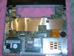
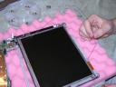
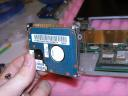
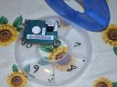
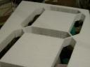

Compact Flash Replacement
My laptop is a Sharp MM20, which I knew I was going to spraypaint eventually, I just needed a reason to. After about a year of wear and scratches from abuse, it was time.
I’m replacing the harddrive in my laptop with a 4GB flash card. It should be faster:
/dev/sdb: Timing cached reads: 3532 MB in 2.00 seconds = 1766.79 MB/sec Timing buffered disk reads: 58 MB in 3.10 seconds = 18.69 MB/sec root@kyle-desktop:~# hdparm -tT /dev/sda
/dev/sda: Timing cached reads: 3532 MB in 2.00 seconds = 1766.13 MB/sec Timing buffered disk reads: 78 MB in 3.04 seconds = 25.67 MB/sec
Pros: Faster seeks and sustained I/O. Lifetime Warranty. Cons: Expensive. 25% Disk Space. Bad blocks over time.
So lets do it! I started with instructions from this guy.
First step, disassembling the laptop:  You can see that this is not a normal size laptop hard drive. This is a 1.8" drive. So I bought this card and a cheap laptop IDE to flash converter off of ebay. (Sorry I don’t have a picture.)
{kind=link}
{kind=link}
{kind=link}
We used containers with numbers and a legend to keep track of small screws and parts. When we were done, these were left over:  (Don’t ask me whats in compartment 8, I really don’t know what it goes to. But there is the leftover drive and screws)
{kind=link}
Second step, spray paint it! Oh, and don’t forget to put in the flash card when you put it back together.  Can you spot the laptop?
{kind=link}
{kind=link}
{kind=link}
{kind=link}
Of course, with only a 4GB drive, I will be running my favorite operating system of course, Ubuntu!
{kind=link}
And the obligatory screen shot!
Want more? Click here to download every picture we took. Closing thoughts: I’m extremely impressed. The camo-finish is beautiful and feels great thanks to the clear coat. Nothing broke, and everything went back together correctly thanks to good documentation and pictures for reference. If you have any questions about what I did, post a comment and I’ll come back and answer them.
Comment via email